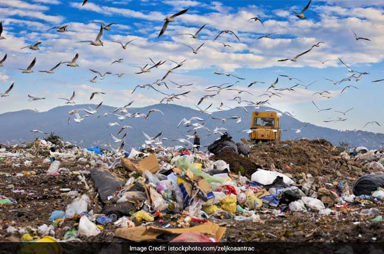
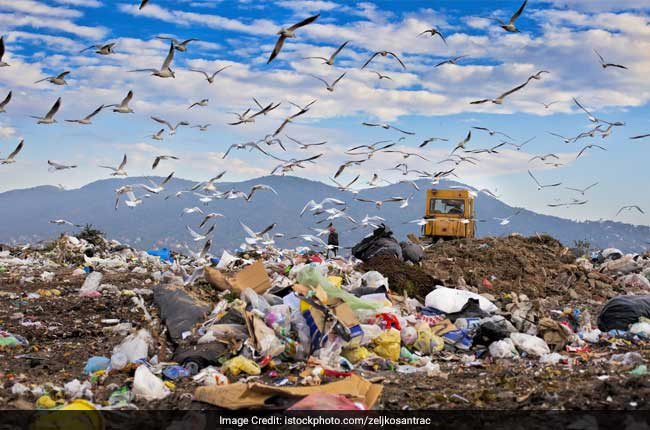

Overview
India is projected to surpass China as the world’s most populous country by 2027 and by 2050, India’s urban population will nearly double to reach 814 million.
Waste generation in urban areas of India will be 0.7 kg per person per day in 2025, approximately four to six times higher than in 1999. According to the Ministry of Environment, Forest and Climate Change, India currently generates 62 million tons of waste (both recyclable and non–recyclable) every year, with an average annual growth rate of 4%. Solid waste, plastic waste and E-waste are the principal waste materials. Air Pollution in India is also a serious health issue. Of the most polluted cities in the world, 22 out of 30 were in India in 2018. As per a study based on 2016 data, at least 140 million people in India breathe air that is 10 times or more over the WHO safe limit.

 
